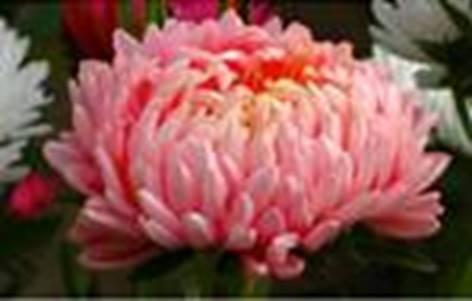

Астровых более 27 000 видов.
Листорасположение очередное, редко супротивное. Жилкование перистое (см. Рис. 1).
Рис. 1. Листья сложноцветных
Хорошо выраженная стержневая корневая система. Корень может быть клубневидно утолщен (лопух).
То, что в быту называют цветком астровых, представляет собой соцветие – корзинку (см. Рис. 2).

Рис. 2. Соцветие сложноцветных
Отдельные цветки окружены оберткой из листков, как правило, зеленых.
Околоцветник двойной, чашечка либо не развита, либо представлена волосками, образующими хохолок. 5 сросшихся лепестков образуют трубку. Тычинок 5, сросшиеся, образуют тычиночную трубку. Пестик 1.
Язычковые цветки образованы лепестками, которые снизу срастаются в трубку, а сверху образуют язычок с зубчиками на конце (см. Рис. 3) (одуванчик).
Рис. 3. Язычковые цветки
У трубчатых цветков сросшиеся лепестки образуют трубку с 5 зубчиками (полынь).
У воронковидных лепестки образуют расширенную кверху воронку (василек).
Ложноязычковые (подсолнух).
Рис. 4. Воронковидные цветки
Сложноцветные опыляются насекомыми, некоторые цветки становятся стерильными, их задача – привлекать опылителя. На дне трубки венчика выделяется нектар.
Некоторые опыляются ветром (полынь)
Плод – семянка (см. Рис. 5). Распространяются ветром (одуванчик, бодяк полевой), животными (череда, лопух).
Рис. 5. Семянка
У василька синего в центре расположены крупные цветки, а по бокам – воронковидные, стерильные, служат для привлечения насекомых (см. Рис. 6).
Рис. 6. Василек синий
Сорняки: бодяк полевой (см. Рис. 7), осот.
Рис. 7. Бодяк полевой
Лекарственные: ромашка, мать-и-мачеха, девясил, пижма.
Декоративные: астры, ноготки, георгины.
Каучуконосные растения: кок-сагыз, тау-сагыз.
Масличные: подсолнух.
Подсолнух – однолетнее травянистое растение с цельными крупными листьями. Цветки в соцветии трубчатые и ложноязычковые – стерильные, по периметру соцветия.
Запасное питательное вещество семянок – жир, который люди выжимают для получения масла.
Другие сельхоз культуры – топинамбур, салат латук.
Помимо травянистых форм также встречается кустарниковая полынь, хризантема. В тропиках произрастают небольшие деревья. На Галапагосских островах встречается скалезия черешчатая – дерево высотой до 20 м.
Родина – Мексика. Ранее использовался, как декоративное растение.
Подсолнечное масло используется в пищу непосредственно и для приготовления маргарина. Жмых идет на приготовление халвы и корм скоту. Зеленая масса используется как корм.
В качестве заменителя кофе используют молотые корни цикория. Его стебли и листья используют как зелень для приготовления салата.
Эстрагон используют как пряность.
В пищу употребляют мясистые основания соцветий артишока.
Козелец выращивают ради корней.
Список литературы
1. Биология. Бактерии, грибы, растения. 6 кл.: учеб. для общеобразоват. учреждений / В.В. Пасечник. – 14-е изд., стереотип. – М.: Дрофа, 2011. – 304 с.: ил.
2. Тихонова Е.Т., Романова Н.И. Биология, 6. – М.: Русское слово.
3. Исаева Т.А., Романова Н.И. Биология, 6. – М.: Русское слово.
Дополнительные рекомендованные ссылки на ресурсы сети Интернет
1. Biolicey2vrn.ucoz.ru (Источник).
2. Files.school-collection.edu.ru (Источник).
3. Medgrasses.ru (Источник).
Домашнее задание
1. Биология. Бактерии, грибы, растения. 6 кл.: учеб. для общеобразоват. учреждений / В.В. Пасечник. – 14-е изд., стереотип. – М.: Дрофа, 2011. – 304 с.: ил. – с. 245, задания и вопрос 5 (Источник).
2. Какие существуют типы цветков сложноцветных? Охарактеризуйте их.
3. Какой плод характерен для астровых? Как эти плоды распространяются?
4. * Подумайте, какими лечебными свойствами обладают представители семейства сложноцветные.